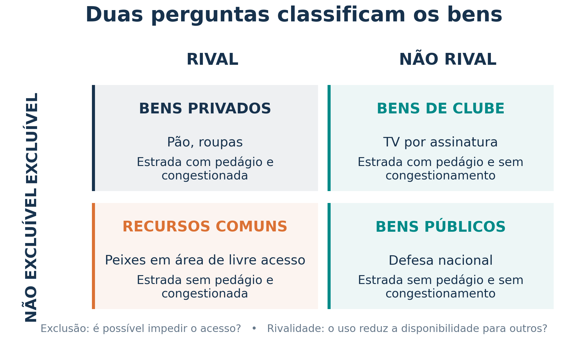
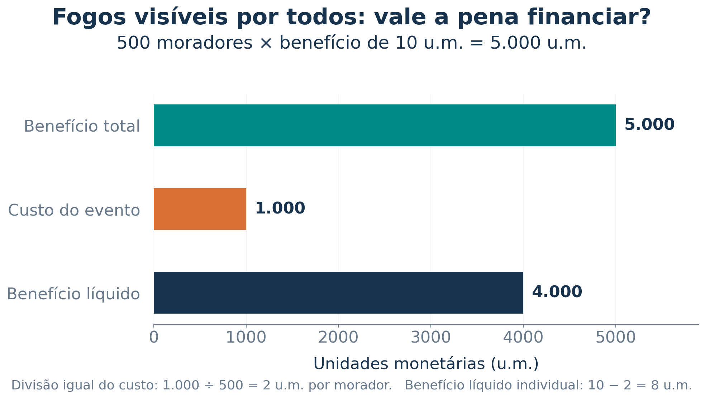
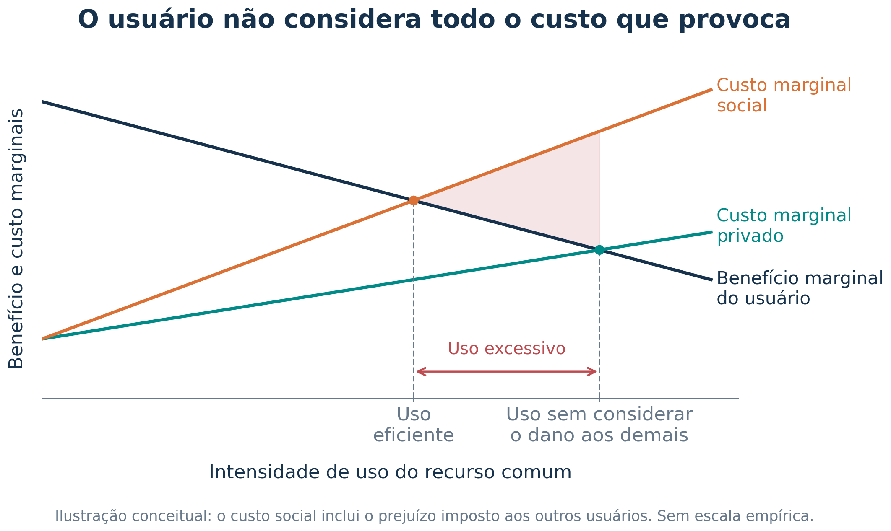

Aula 15 - Bens públicos e recursos comuns
01 - Introdução: quem usa e quem paga?
04 - A classificação depende das condições de uso
06 - Fogos de artifício: benefício e financiamento
07 - Defesa nacional, pesquisa básica e combate à pobreza
08 - Faróis: quem financia e quem produz?
09 - Análise de custo-benefício
10 - Segurança no trânsito: um exemplo resolvido
11 - O que são recursos comuns?
12 - A tragédia dos recursos comuns
13 - Uso privado e custo social
14 - Como reduzir o uso excessivo
15 - Estradas: pedágio e congestionamento
16 - Pesca, animais e incentivos à preservação
17 - Direitos de uso e ação coletiva
Por que algumas coisas valiosas são pouco oferecidas e outras são usadas em excesso?
Nesta aula, vamos classificar os bens, entender o problema do carona e explicar a tragédia dos recursos comuns.
A ligação com a aula anterior é direta: quem decide pode deixar de considerar benefícios ou custos impostos a outras pessoas.
Base: Mankiw, capítulo 11, Public Goods and Common Resources. Páginas 240 a 254 do PDF, correspondentes às páginas impressas 211 a 225. A abertura ilustrada está na página 239 do PDF.
Um bem é excluível quando é possível impedir seu uso, por exemplo, cobrando pelo acesso ou exigindo uma senha.
Um ingresso permite controlar a entrada. Já o benefício da defesa nacional alcança também quem não contribuiu voluntariamente para ela.
Um bem é rival no consumo quando o uso de uma unidade por alguém reduz a possibilidade de outras pessoas utilizarem essa mesma unidade.
Uma fatia de pizza é rival. Uma informação de acesso aberto pode ser consultada por muitas pessoas sem se esgotar.
Para a prova: não rivalidade não significa custo de produção zero. Produzir conhecimento pode custar muito, embora compartilhá-lo não o retire de quem já o utiliza.

Bens públicos e recursos comuns têm em comum a dificuldade de exclusão. O que os diferencia é a rivalidade.
Nos bens de clube, a não rivalidade vale enquanto o uso estiver dentro da capacidade. Lotação ou congestionamento podem alterar a análise.
Figura de elaboração didática baseada na classificação do capítulo 11.
O nome do bem e a identidade de quem o oferece não bastam. Examine as regras de acesso e a capacidade disponível.
| Situação | O que observar |
|---|---|
| Wi-Fi aberto e sem congestionamento | Um usuário adicional não prejudica os demais: aproxima-se de um bem público. |
| O mesmo Wi-Fi aberto, agora saturado | O uso de um reduz a qualidade para outros: aproxima-se de um recurso comum. |
| Acesso controlado por senha | A exclusão torna-se possível; ainda é preciso verificar a rivalidade. |
| Merenda oferecida gratuitamente | Uma porção consumida não pode alimentar outro aluno: há rivalidade. |
Um serviço gratuito pode ter acesso restrito. Um bem oferecido pelo governo pode ser rival e excluível.
Aqui, “bem público” é uma classificação econômica, distinta da classificação jurídica dos bens pertencentes ao poder público.
Em duplas, classifiquem cada situação e expliquem os dois critérios.
Carona, ou free rider, é quem recebe o benefício de um bem sem contribuir para seu financiamento.
Quando não é possível excluir quem não paga, cada pessoa pode esperar que as outras assumam o custo. Se muitos fizerem isso, a arrecadação voluntária pode não sustentar uma oferta socialmente desejável.
A dificuldade central é a não exclusão. A não rivalidade também significa que compartilhar o benefício não exige, necessariamente, produzir uma nova unidade para cada usuário.
Uma resposta possível: financiamento coletivo por tributos. Isso não elimina a necessidade de escolher bem os projetos e controlar custos.
Considere o exemplo hipotético do livro, expresso em unidades monetárias: 500 moradores, cada um atribuindo benefício de 10 u.m. ao evento, e custo total de 1.000 u.m.

Por que vender ingressos pode falhar? Os fogos são visíveis também para quem não compra ingresso.
Se todos financiarem igualmente o custo, cada um pagará 2 u.m. e terá benefício líquido de 8 u.m. Esse resultado depende da hipótese de que todos atribuem o mesmo benefício de 10 u.m.
Benefício social positivo não garante receita privada suficiente.
O livro discute três aplicações importantes:
| Aplicação | Por que entra na discussão? |
|---|---|
| Defesa nacional | A proteção de uma pessoa não costuma diminuir a das demais, e é difícil excluir beneficiários. |
| Pesquisa básica | O conhecimento divulgado pode beneficiar muitas pessoas e empresas, além de quem financiou a descoberta. |
| Combate à pobreza | Viver em uma sociedade com menos pobreza pode produzir um benefício coletivo, inclusive para quem não contribuiu diretamente. |
Duas distinções importantes:
O financiamento público pode enfrentar o carona, mas os projetos ainda precisam ser avaliados quanto a seus custos e benefícios.
A luz de um farol pode orientar muitos navios ao mesmo tempo. Impedir que um navio em passagem veja a luz é difícil.
Mankiw apresenta o caso histórico de faróis ingleses financiados por interessados nos portos. A possibilidade de cobrar dos navios que utilizavam o porto ajudava a financiar o serviço de orientação.
O caso mostra que é preciso perguntar:
Financiamento público não exige produção diretamente estatal. Um evento pode ser pago coletivamente e executado por uma empresa contratada.
Também podem existir doações, associações e outras formas de provisão privada. A dificuldade do carona não significa impossibilidade absoluta de qualquer iniciativa privada.
A pergunta é se os benefícios sociais justificam os custos sociais.
\[ \text{Benefício líquido social} = \text{benefício social total} - \text{custo social total} \]
A avaliação deve considerar as pessoas afetadas, os custos de operação e manutenção e o custo de oportunidade dos recursos utilizados.
Em um bem público, o mesmo serviço beneficia várias pessoas. Por isso, avaliamos o benefício que ele proporciona ao conjunto dos beneficiários.
Por que é difícil?
Um projeto ter benefício líquido positivo é relevante para a eficiência. Quem paga e quem se beneficia também importa para a decisão coletiva.
No exemplo hipotético do capítulo, um semáforo custa 10.000 u.m. e reduz o risco considerado de acidente fatal de 1,6% para 1,1%.
A avaliação adota 10 milhões de u.m. por vida estatística. Esse é um valor ilustrativo do livro, não uma estimativa oficial atual.
| Etapa | Cálculo |
|---|---|
| Redução do risco | \(1{,}6\% - 1{,}1\% = 0{,}5\) ponto percentual |
| Redução em forma decimal | \(0{,}005\) |
| Benefício esperado | \(0{,}005 \times 10.000.000 = 50.000\) u.m. |
| Benefício líquido | \(50.000 - 10.000 = 40.000\) u.m. |
Nas hipóteses do exemplo, o benefício esperado supera o custo.
“Vida estatística” expressa a valoração de pequenas reduções de risco em uma população. Não é o preço de uma pessoa identificada. Considerar somente a renda que alguém produziria deixaria de fora muitos benefícios de preservar a vida.
Em uma avaliação real, custos e benefícios precisam usar um horizonte temporal consistente e incluir manutenção e outras consequências.
Recursos comuns são rivais no uso e apresentam dificuldade de exclusão.
| Exemplo | Onde está a rivalidade? |
|---|---|
| Peixes em área de livre acesso | O peixe capturado por um pescador não pode ser capturado por outro. |
| Pastagem compartilhada sem controle eficaz | Mais animais reduzem o alimento disponível e podem degradar o pasto. |
| Estrada gratuita congestionada | Um veículo adicional aumenta o tempo de viagem de outros usuários. |
| Qualidade do ar e da água | A poluição consome a capacidade ambiental de absorver resíduos e reduz a qualidade disponível aos demais. |
No caso ambiental, a rivalidade relevante está na qualidade e na capacidade limitada do ambiente, não na ideia de que uma respiração individual necessariamente esgota o ar de outra pessoa.
Diferença central: no bem público, o problema típico é financiar a oferta; no recurso comum, é evitar o uso excessivo e a degradação.
O livro imagina uma comunidade em que os moradores criam ovelhas em uma pastagem compartilhada.
Enquanto há poucos animais, o pasto é abundante. Com a expansão dos rebanhos, cada ovelha adicional passa a retirar alimento dos demais animais e pode comprometer a recuperação da vegetação.
O incentivo individual: o criador recebe o benefício de acrescentar uma ovelha, mas divide com todos os outros o dano ao pasto.
O resultado coletivo: muitos criadores ampliam os rebanhos, e o uso total pode ultrapassar o nível que preserva o valor do recurso.
Essa é a tragédia dos recursos comuns: incentivos individuais podem levar ao uso excessivo de um recurso compartilhado.
Não é um destino inevitável de toda propriedade coletiva. Regras de acesso, limites de uso e fiscalização eficaz podem mudar os incentivos.

Como ler: o usuário compara o benefício adicional com o custo que paga. A sociedade também precisa considerar o prejuízo aos outros usuários.
\[ CMg_{social} = CMg_{privado} + CMg_{externo} \]
Ao ignorar esse custo externo, a intensidade de uso fica acima da socialmente eficiente. É a mesma lógica da externalidade negativa da Aula 14, aplicada ao uso de um recurso comum.
A figura é uma ilustração didática autoral, sem escala empírica. Para a prova, o essencial é compreender a direção do efeito.
A solução precisa fazer cada usuário considerar a escassez e o dano que provoca aos demais.
| Instrumento | Como atua |
|---|---|
| Regras e limites | Restringem quantidade, locais, períodos ou formas de uso. |
| Cobrança pelo uso | Faz o usuário enfrentar parte do custo social de sua decisão. |
| Permissões limitadas e negociáveis | Fixam um limite total e permitem transferir direitos de uso. |
| Direitos de propriedade ou de uso bem definidos | Atribuem responsabilidade e aproximam os incentivos individuais dos efeitos sobre o recurso. |
| Acordos entre usuários | Estabelecem compromissos de uso e mecanismos de acompanhamento. |
No exemplo da pastagem, podem existir limites por criador, cobrança por animal ou direitos delimitados de utilização.
Definir uma regra não basta: ela precisa ser viável, monitorada e cumprida. Nenhum instrumento é automaticamente o melhor para todo recurso.
A mesma infraestrutura pode aparecer em quatro classificações:
| Condição da estrada | Sem pedágio e de livre acesso | Com pedágio e acesso controlado |
|---|---|---|
| Sem congestionamento | Bem público | Bem de clube |
| Congestionada | Recurso comum | Bem privado, na classificação econômica |
O pedágio altera a possibilidade de exclusão. O congestionamento altera a rivalidade.
Um pedágio associado ao congestionamento pode incentivar mudanças de horário, trajeto ou modo de transporte. A cobrança pode ser maior quando o custo imposto aos outros motoristas é maior.
Um imposto sobre a gasolina é um instrumento menos preciso para esse objetivo: também encarece viagens em locais e horários sem congestionamento.
A avaliação da política inclui os custos de cobrança e a distribuição dos efeitos entre usuários, considerando as alternativas de transporte.
Na pesca de livre acesso, capturar hoje pode reduzir o estoque que outros pescadores encontrarão amanhã.
O capítulo apresenta instrumentos como limites de captura, licenças, restrições de temporada e proteção de animais jovens. A ideia é conter o uso que compromete a reprodução e a disponibilidade futura.
Em áreas compartilhadas por vários países, cooperação e fiscalização tornam-se mais difíceis. A existência formal de uma regra não garante que ela seja cumprida.
Quem cria gado tem incentivo para manter o rebanho porque pode obter os benefícios futuros de sua preservação. Na captura sem controle, quem preserva um animal pode não receber esses benefícios, pois outro pode capturá-lo antes.
A lição é sobre incentivos e direitos de uso. O contraste não prova que a propriedade privada, isoladamente, resolva qualquer problema de conservação. A adequação da política depende do recurso e das condições locais.
Direitos bem definidos ajudam a identificar quem pode usar, quem pode excluir e quem responde pelos efeitos de uma decisão.
Quando benefícios ou custos relevantes não entram na transação, o mercado pode não alcançar uma alocação eficiente.
| Problema | Resposta possível |
|---|---|
| Benefício coletivo difícil de cobrar individualmente | Financiar a provisão de um bem público. |
| Uso que degrada um recurso compartilhado | Estabelecer limites, cobranças ou regras de acesso. |
| Direitos de uso indefinidos | Delimitar direitos e responsabilidades, quando viável. |
O governo pode atuar na função alocativa, procurando melhorar a oferta e o uso dos recursos. Isso inclui decidir quais bens oferecer e como financiar essa oferta.
A atuação precisa ser bem planejada e executada. Reconhecer uma falha de mercado não garante que qualquer intervenção trará benefício líquido.
Comece sempre por exclusão e rivalidade.
A análise de custo-benefício orienta a escolha de projetos. Regras, cobranças e direitos de uso podem melhorar os incentivos à preservação.
Para a prova: não confunda bem público com propriedade do governo; não confunda não rivalidade com custo zero; e não classifique uma estrada sem verificar acesso e congestionamento.
12 exercícios: 4 de múltipla escolha e 8 de verdadeiro ou falso. Primeiro, resolva os enunciados. Depois, consulte o gabarito e as resoluções no fim deste slide.
As questões têm origem em provas oficiais da FGV e do Cebraspe. A redação foi adaptada para a aula, preservando o conteúdo avaliado. Nos exercícios 9 a 12, uma afirmativa ou alternativa de uma questão original foi transformada em item de julgamento; essa conversão é explicitamente identificada. Não são itens originais autônomos da banca.
Cebraspe: verdadeiro corresponde a certo; falso corresponde a errado.
Cebraspe | Caesb | Analista de Suporte ao Negócio, Economista | 2025 | questão original 41. Redação adaptada.
Na classificação econômica, um bem público combina não rivalidade e não exclusão. Qual exemplo corresponde a essa definição?
A. Eletricidade fornecida ao consumidor.
B. Porção de merenda oferecida na escola.
C. Serviço de transporte coletivo.
D. Parque de diversões particular.
E. Edição on-line do Diário Oficial da União, disponível para consulta aberta.
Prova oficial · Gabarito definitivo
FGV | TCE-RR | Auditor Substituto de Conselheiro | 2025 | tipo 1 | questão original 67. Redação adaptada.
Qual alternativa explica corretamente uma dificuldade de alocação associada à provisão de bens públicos?
A. Esses bens são rivais: o consumo de uma pessoa impede o de outra.
B. A exclusão de consumidores é uma característica necessária desses bens.
C. A não exclusão e a não rivalidade, como na defesa nacional, dificultam que o fornecedor privado capture os benefícios em forma de receita.
D. Esses bens produzem, inevitavelmente, externalidades negativas.
E. As duas características garantem que sua provisão inteiramente pelo mercado seja eficiente.
Prova oficial · Gabarito definitivo
Cebraspe | Caesb | Analista de Suporte ao Negócio, Economista | 2025 | questão original 66. Redação adaptada.
Sobre a tragédia dos bens comuns, assinale a alternativa correta.
A. Sua causa é exclusivamente a má gestão de órgãos ambientais.
B. Ela resulta da conservação dos recursos de livre acesso.
C. Ela decorre de ações públicas, sem relação com decisões individuais.
D. Regras de utilização ou direitos de propriedade definidos podem contribuir para mitigá-la.
E. Trata-se de um problema apenas ambiental, sem dimensão econômica ou social.
Prova oficial · Gabarito definitivo
Cebraspe | Caesb | Analista de Suporte ao Negócio, Economista | 2025 | questão original 61. Redação adaptada.
Na abordagem da economia ambiental, assinale a alternativa correta.
A. A sustentabilidade forte, que rejeita a substituição dos recursos naturais por soluções tecnológicas, caracteriza essa abordagem.
B. A escassez dos recursos naturais não implica que devam ser considerados seu valor econômico e seu uso alternativo.
C. A rivalidade distingue bens públicos dos recursos de acesso livre tratados na questão: nesses recursos, o uso de um reduz a disponibilidade para outro; nos bens públicos, isso não ocorre.
D. A solução por impostos é associada a Coase, enquanto a definição de direitos é associada a Pigou.
E. A gestão eficiente pode desconsiderar a escassez dos recursos naturais.
Prova oficial · Gabarito definitivo
Cebraspe | MPO | Analista de Planejamento e Orçamento, especialidade Geral | 2024 | prova P2, item original 74. Redação adaptada; contexto preservado.
Uma cidade é atendida por uma única concessionária de distribuição de energia. Por ser regulada pelo Estado, a eletricidade distribuída passa a ser um bem público na classificação econômica.
( ) Certo / verdadeiro ( ) Errado / falso
Prova oficial · Gabarito definitivo
Cebraspe | MPO | Analista de Planejamento e Orçamento, especialidade Geral | 2024 | prova P2, item original 75. Redação adaptada.
Em rodovia operada por concessionária privada, a instalação de cobrança logo depois de cada entrada permite resolver o problema do carona, independentemente dos custos de transação dessa cobrança.
( ) Certo / verdadeiro ( ) Errado / falso
Prova oficial · Gabarito definitivo
Cebraspe | MPO | Analista de Planejamento e Orçamento, especialidade Geral | 2024 | prova P2, item original 76. Redação adaptada.
Uma rodovia administrada pela União e sem pedágio é sempre um bem público.
( ) Certo / verdadeiro ( ) Errado / falso
Prova oficial · Gabarito definitivo
Cebraspe | MPO | Analista de Planejamento e Orçamento, especialidade Geral | 2024 | prova P2, item original 92. Redação adaptada.
Bens que apresentam não rivalidade e não exclusão precisam, necessariamente, ser fornecidos pelo Estado.
( ) Certo / verdadeiro ( ) Errado / falso
Prova oficial · Gabarito definitivo
FGV | CAGE-RS | Auditor do Estado | 2025 | manhã, tipo 1 | questão original 41, terceira afirmativa. Recorte e adaptação para julgamento.
O financiamento público da defesa nacional, um bem não rival e não excluível, procura enfrentar a falha associada ao comportamento de carona.
( ) Verdadeiro ( ) Falso
Prova oficial · Gabarito definitivo da questão de origem
FGV | CGE-SC | Auditor do Estado, Economia | 2023 | tarde, tipo 1 | questão original 25, alternativa A. Conversão em afirmativa para julgamento.
Decidir quais bens públicos oferecer e em que quantidade é uma das atribuições relacionadas à função alocativa do governo.
( ) Verdadeiro ( ) Falso
Prova oficial · Gabarito definitivo da questão de origem
FGV | ALEGO | Analista Legislativo, Economista | 2026 | tipo 1 | questão original 57, alternativa D. Adaptação de alternativa para julgamento.
A tragédia dos recursos comuns ocorre quando um recurso não excluível e rival é subutilizado.
( ) Verdadeiro ( ) Falso
Prova oficial · Gabarito definitivo da questão de origem
FGV | AGENERSA | Especialista em Regulação | 2023 | tipo 1 | questão original 41, alternativa E. Conversão e adaptação para julgamento.
Impor que um bem seja fornecido pela iniciativa privada é suficiente para fazer seu consumo apresentar rivalidade.
( ) Verdadeiro ( ) Falso
Prova oficial · Gabarito definitivo da questão de origem
| Questão | Resposta | Questão | Resposta |
|---|---|---|---|
| 1 | E | 7 | Errado / falso |
| 2 | C | 8 | Errado / falso |
| 3 | D | 9 | Verdadeiro |
| 4 | C | 10 | Verdadeiro |
| 5 | Errado / falso | 11 | Falso |
| 6 | Certo / verdadeiro | 12 | Falso |
A consulta de uma pessoa ao conteúdo aberto do DOU não retira a informação disponível para as outras. No contexto da questão, também não há barreira de acesso à informação. As duas propriedades sustentam a classificação como bem público.
A eletricidade consumida e a porção de merenda são rivais. O transporte tem capacidade limitada, e um parque privado pode controlar a entrada. A oferta pública ou gratuita não substitui a análise das propriedades econômicas.
A não exclusão permite que alguém receba o benefício sem pagar. O fornecedor pode arrecadar menos do que o necessário para oferecer a quantidade socialmente desejável.
A e B invertem as propriedades dos bens públicos. D erra ao afirmar que esses bens necessariamente produzem danos externos. E transforma uma possível falha de mercado em garantia de eficiência.
Não rivalidade não implica custo de produção zero, e o carona não significa impossibilidade absoluta de toda provisão privada.
Regras de acesso, limites, fiscalização e direitos definidos podem reduzir a sobreutilização. A intervenção procura fazer cada usuário considerar o efeito de sua decisão sobre os demais e sobre o futuro do recurso.
A e C ignoram a relação entre escolhas individuais e resultado coletivo. B troca degradação por conservação. E ignora consequências econômicas e sociais, como perda de renda, escassez e conflitos de acesso.
Ambas as categorias consideradas têm dificuldade de exclusão. No recurso comum, a unidade utilizada deixa de estar disponível para outro usuário; no bem público, o benefício pode ser compartilhado sem essa redução.
A questão emprega “bens de acesso livre” no sentido de recursos comuns. Livre acesso, isoladamente, não define rivalidade: é preciso verificar como o uso afeta os demais.
Sobre as demais alternativas: na distinção adotada pela banca, a economia ambiental admite possibilidades de substituição e considera escassez e valor econômico. A formulação de sustentabilidade forte da alternativa A não caracteriza essa abordagem. B e E retiram elementos centrais da decisão econômica. D inverte a associação: imposto corretivo é ligado a Pigou; negociação com direitos definidos e custos de transação suficientemente baixos é ligada a Coase.
O comando trata de uma concessionária regulada. Isso não transforma a eletricidade consumida em bem público. O fornecimento pode ser medido e o acesso pode ser controlado; a energia consumida por um usuário não fica disponível para o consumo de outro.
Correção: classifique pelas condições de uso e exclusão, não pela existência de regulação ou pela identidade do fornecedor.
O gabarito definitivo considera o item certo. Na situação descrita, a cobrança depois de cada entrada permite condicionar o acesso ao pagamento e enfrentar o carona.
A expressão sobre custos não significa que eles sejam irrelevantes para a decisão econômica. A interpretação é que um mecanismo pode resolver a possibilidade de acesso sem pagamento e, ainda assim, ser caro demais para valer a pena. Eliminar o carona não prova que o sistema de cobrança tenha benefício líquido positivo.
Para não confundir: exclusão possível é uma questão; eficiência e viabilidade da cobrança são outras.
Uma estrada de livre acesso e sem congestionamento aproxima-se de um bem público. Quando congestionada, cada veículo adicional prejudica o uso pelos demais, aparecendo rivalidade.
Correção: sem pedágio e congestionada, a estrada é classificada como recurso comum. A palavra “sempre” torna a afirmação falsa.
Não rivalidade e não exclusão são propriedades do bem. Elas não identificam obrigatoriamente quem o fornece.
Doações, associações, receitas vinculadas a outros serviços e contratos podem viabilizar alguma provisão privada. O problema é a possibilidade de oferta insuficiente diante do carona.
Correção: o Estado pode financiar a provisão, mas não é, por definição, o único fornecedor possível. Financiamento e produção também podem ficar a cargo de agentes diferentes.
Quem recebe proteção sem contribuir voluntariamente tem incentivo a esperar que outros paguem. O financiamento público permite reunir recursos para o serviço coletivo.
A questão original apresenta três afirmativas. O gabarito definitivo é C, sequência F-V-V; portanto, a terceira afirmativa é verdadeira. As duas primeiras não integram este exercício.
A função alocativa envolve a distribuição dos recursos entre usos, incluindo a provisão de bens públicos. Decidir quais oferecer e em que quantidade faz parte dessa função.
A questão original perguntava o que o governo não deve fazer no âmbito da função alocativa, e seu gabarito é E. A alternativa A foi convertida aqui em afirmativa positiva. O “verdadeiro” se refere à adaptação didática; não é uma letra do gabarito original.
O usuário recebe o benefício de sua decisão, mas não considera todo o custo imposto aos demais. Assim, o uso tende a ficar acima do nível socialmente eficiente.
Correção: substituir “subutilizado” por “sobreutilizado”, nas condições de livre acesso sem controle eficaz consideradas no problema.
A questão original 57 tem gabarito C. A alternativa D, recortada neste exercício, é uma afirmação incorreta.
A rivalidade depende de um uso reduzir a disponibilidade ou a qualidade para outros, e não simplesmente de quem oferece o bem.
Correção: a provisão privada não torna um bem automaticamente rival. Por exemplo, uma informação aberta produzida por uma organização privada pode continuar não rival. Uma mudança na forma de cobrar pode alterar a exclusão, sem necessariamente alterar a rivalidade.
A questão original pedia a exceção entre formas de intervenção ligadas às externalidades. Seu gabarito E identifica justamente a alternativa inadequada, que deu origem a este item falso.
As resoluções e os exemplos complementares são de elaboração didática. O ano indicado corresponde à aplicação da prova, que pode diferir do ano do edital.
Referência teórica: Mankiw, N. Gregory. Principles of Economics. 8ª edição, capítulo 11. PDF fornecido: páginas 240 a 254; paginação impressa: 211 a 225. Figuras redesenhadas para a aula.